История велосипеда
От «беговой машины» Карла Драйса 1817 года до электровелосипедов и электронных переключателей — 34 ключевых событий. Только проверенные факты; спорные версии помечены.
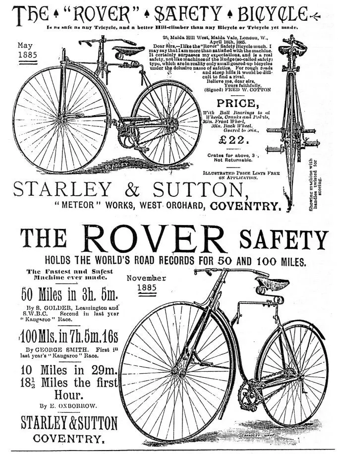
До велосипеда
- ок. 1490 (миф)
«Велосипед Леонардо да Винчи» — подделка
В 1970-х в одной из рукописей Леонардо (Атлантический кодекс) был «обнаружен» рисунок, похожий на велосипед с цепью. Большинство историков считают его поздней подделкой, нанесённой при реставрации. Достоверных свидетельств, что кто-то изобрёл велосипед до XIX века, нет.
Дрезина: 1817–1860-е
- 1817
Карл Драйс и «машина для бега»
Немецкий изобретатель барон Карл фон Драйс из Мангейма построил двухколёсную «Laufmaschine» («машину для бега»): деревянная рама, два колеса одно за другим и поворотное переднее колесо. Ездок отталкивался ногами от земли. 12 июня 1817 года Драйс совершил на ней первую известную поездку из Мангейма — по распространённым данным, около 13–14 км туда и обратно примерно за час. Это считается рождением двухколёсного транспорта с рулевым управлением. Позже её назовут «дрезиной» по фамилии изобретателя.
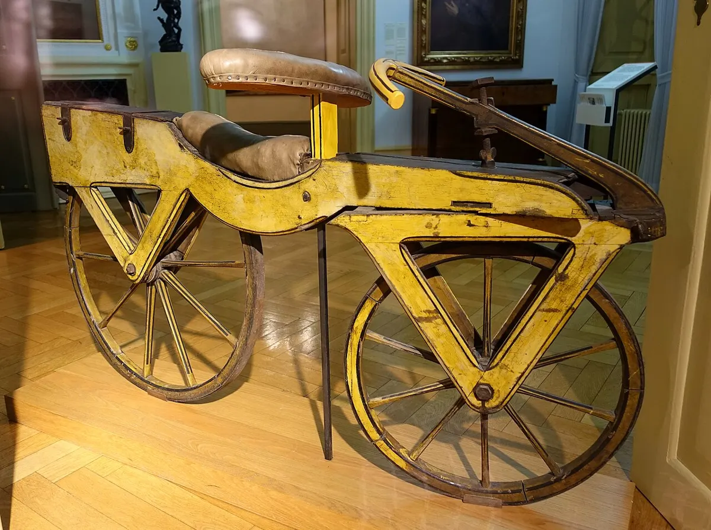
Фото: Daderot, Public domain · источник - 1818
Дрезина в Европе: «денди-хорс»
Драйс получает привилегию на изобретение в Бадене и показывает машину в Париже. В Лондоне каретный мастер Денис Джонсон выпускает улучшенную версию — «pedestrian curricle», которую в народе прозвали «hobby horse» и «dandy horse». Мода быстро прошла: езда по тротуарам была опасна для пешеходов, и в ряде городов её запретили.
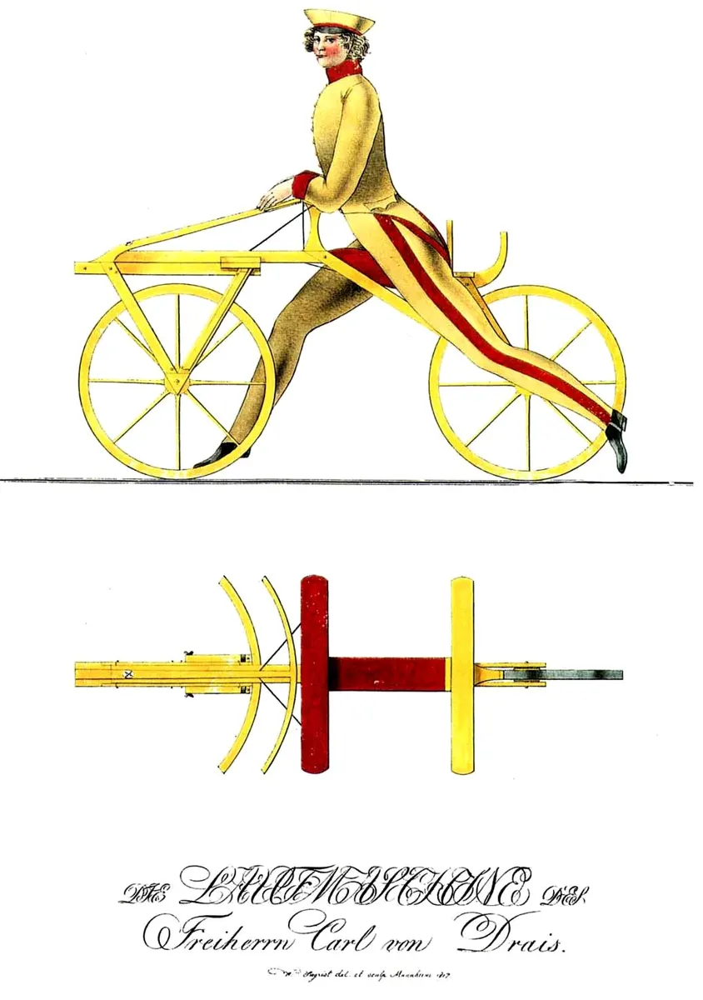
Фото: Wilhelm Siegrist (1797-1843?), Public domain · источник - 1839 (спорно)
Рычажный привод Макмиллана
Шотландскому кузнецу Киркпатрику Макмиллану приписывают создание двухколёсной машины с рычажным приводом на заднее колесо. Документальные подтверждения слабые, и историки спорят, насколько эта версия достоверна.
Велосипед с педалями: 1860–1880-е
- 1860-е
Педали на переднем колесе: Мишо и Лальман
В Париже появляются велосипеды с педалями, закреплёнными прямо на оси переднего колеса. Их связывают с именами кузнеца Пьера Мишо, его сына Эрнеста и механика Пьера Лальмана. В 1866 году Лальман получил патент на такой велосипед в США. Мастерская Мишо начала серийное производство; в Англии эти тряские машины с железными шинами прозвали «boneshaker» — «костотряс».
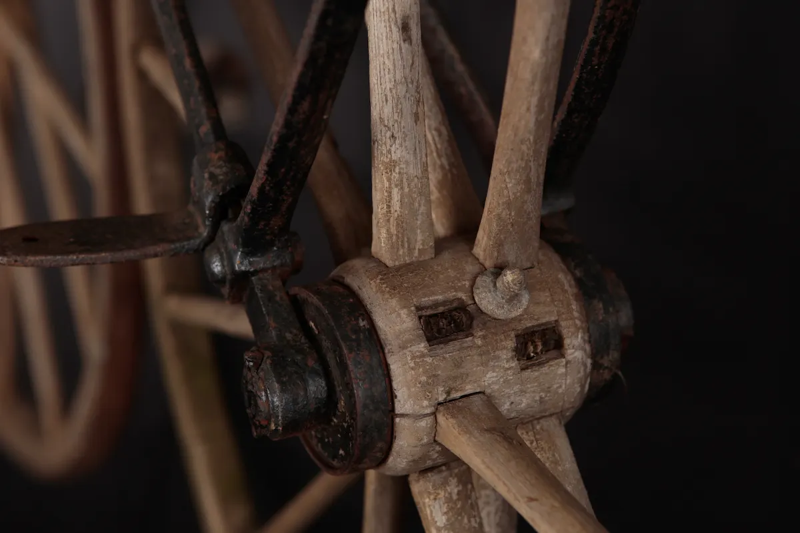
Фото: tetedelacourse, CC BY-SA 2.0 · источник - 1868
Первые велогонки
31 мая 1868 года в парке Сен-Клу под Парижем прошла одна из первых задокументированных велогонок на 1200 метров; победил англичанин Джеймс Мур. Через год он же выиграл гонку Париж — Руан (около 120 км).
- 1870
«Пенни-фартинг» — велосипед с большим колесом
Чтобы ехать быстрее при педалях на оси, переднее колесо стали делать всё больше — до 1,5 м. Так появился «высокий» велосипед (ordinary, high wheeler), в Англии — «penny-farthing» по аналогии с крупной монетой пенни и мелкой фартинг. В 1870 году Джеймс Старли и Уильям Хиллман выпустили модель Ariel. Езда была быстрой, но опасной: при торможении или наезде на камень ездок падал головой вперёд.
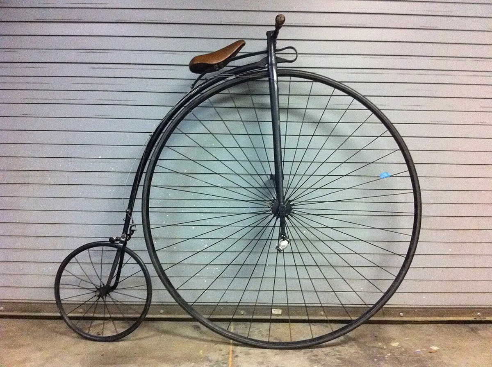
Фото: Mike deMille, CC BY 2.0 · источник - 1870-е
Металлические колёса со спицами на растяжение
Деревянные колёса уступают место металлическим ободьям с натянутыми проволочными спицами — лёгким и прочным. Джеймсу Старли приписывают тангенциальную спицовку (спицы под углом к втулке), до сих пор используемую в колёсах.
Безопасный велосипед: 1880–1900
- 1885
Rover — «безопасный велосипед»
Джон Кемп Старли (племянник Джеймса Старли) представил в Ковентри велосипед Rover: колёса почти одинакового размера, цепной привод на заднее колесо и посадка, при которой ездок достаёт ногами до земли. Такие машины назвали «safety bicycle» — безопасный велосипед. Именно он — прямой предок современных велосипедов.
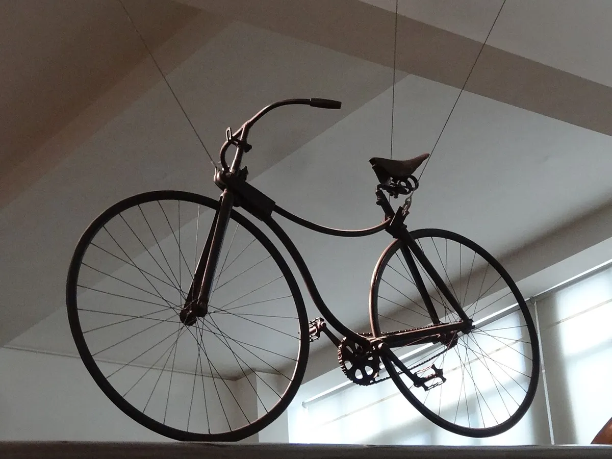
Фото: Jonathan Cardy, CC BY-SA 3.0 · источник - 1888
Пневматическая шина Данлопа
Шотландский ветеринар Джон Бойд Данлоп, живший в Белфасте, сделал для велосипеда сына надувные шины и в 1888 году получил патент. Езда стала намного мягче и быстрее, и пневматика за несколько лет вытеснила сплошные резиновые шины. (Позже выяснилось, что идею надувной шины ещё в 1840-х патентовал Роберт Томсон, но она тогда не прижилась.)

Фото: Geni, CC BY-SA 4.0 · источник - 1890-е
Ромбовидная рама и велосипедный бум
Рама «ромб» из двух треугольников становится стандартом. В Европе и США начинается велосипедный бум: велосипед становится массовым транспортом, а для женщин — символом свободы передвижения. Появляются дорожные велосипедные клубы, которые одними из первых требуют хороших дорог.
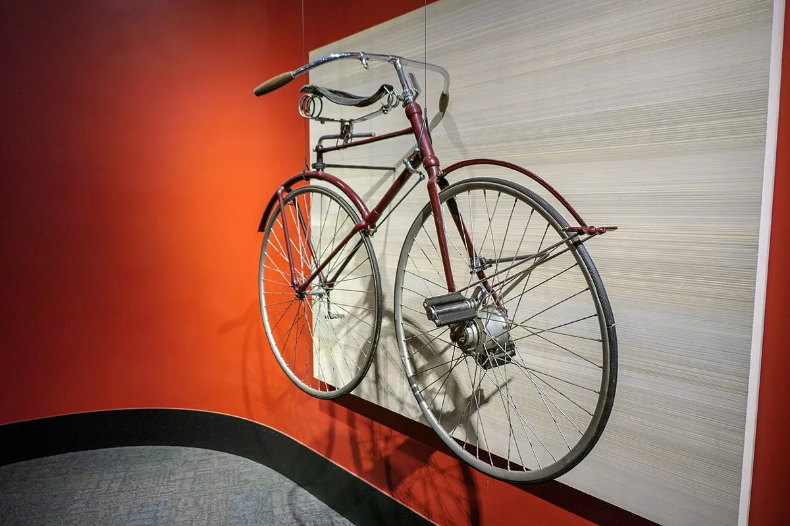
Фото: Kenneth C. Zirkel, CC BY-SA 4.0 · источник - конец 1890-х
Свободный ход и ножной тормоз
Распространяется механизм свободного хода: можно не крутить педали на спуске. Вместе с ним появляется ножной (педальный) тормоз во втулке — его до сих пор ставят на детские и городские велосипеды.
- 1891
Съёмная шина Мишлен
Братья Андре и Эдуар Мишлен во Франции патентуют съёмную пневматическую шину, которую можно отремонтировать за минуты, а не за часы. Это сделало пневматику практичной в дороге.
XX век
- 1902
Трёхскоростная втулка Sturmey-Archer
В Великобритании запатентована трёхскоростная планетарная втулка Sturmey-Archer; её начинает массово использовать компания Raleigh. Планетарные втулки — предки современных Shimano Nexus и Alfine.
- 1903
Первая «Тур де Франс»
Газета L'Auto организовала многодневную гонку вокруг Франции, чтобы поднять тираж. Первым победителем стал Морис Гарен. Сегодня «Тур» — самая известная велогонка мира.
- 1921
Основана Shimano
В японском городе Сакаи Сёдзабуро Симано основал мастерскую, первым продуктом которой стала велосипедная трещотка. Со временем Shimano стала крупнейшим в мире производителем велосипедных компонентов. Подробнее — велосипеды Японии.
- 1930-е
Эксцентрик Кампаньоло
Итальянский гонщик Туллио Кампаньоло, по известной истории замёрзший при попытке открутить гайки колеса на горном перевале, изобрёл быстросъёмный эксцентрик. В 1933 году он основал в Виченце компанию Campagnolo.
- 1935
Трубы Reynolds 531
Британская компания Reynolds выпустила знаменитые трубы из марганцево-молибденовой стали 531. На рамах из 531 одержано множество побед в гонках; трубы с переменной толщиной стенки стали стандартом качества стальных рам. Подробнее — как делают рамы.
- 1937
Переключатели передач в профессиональных гонках
На «Тур де Франс» официально разрешили переключатели передач (до этого гонщики переставляли колесо другой стороной, чтобы сменить звезду). Около 1950 года Campagnolo выпускает параллелограммный задний переключатель — схему, которую используют и сегодня.
- 1948
Кэйрин в Японии
В Японии появился кэйрин — трековая гонка за лидером, ставшая популярным видом спорта. С 2000 года кэйрин входит в программу Олимпийских игр.
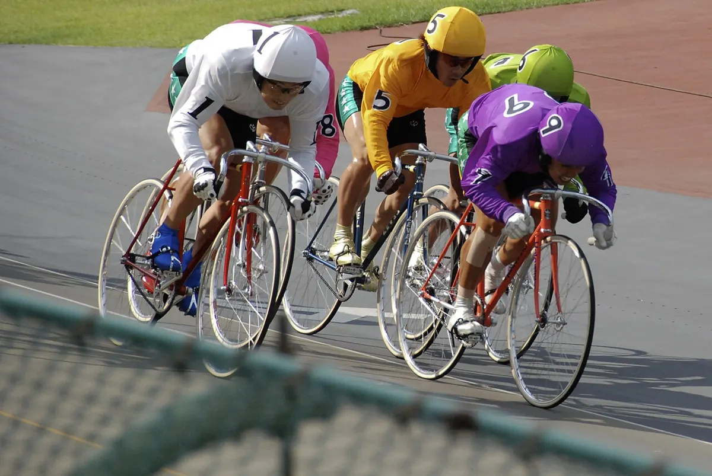
Фото: Paulkeller, CC BY-SA 3.0 · источник - XX век
Массовые велосипеды СССР
В Советском Союзе велосипеды выпускали крупные заводы в Харькове, Минске, Перми и других городах; дорожные «Украина» и «Урал», «Аист», складная «Кама» знакомы нескольким поколениям. Подробнее — велосипеды СССР.
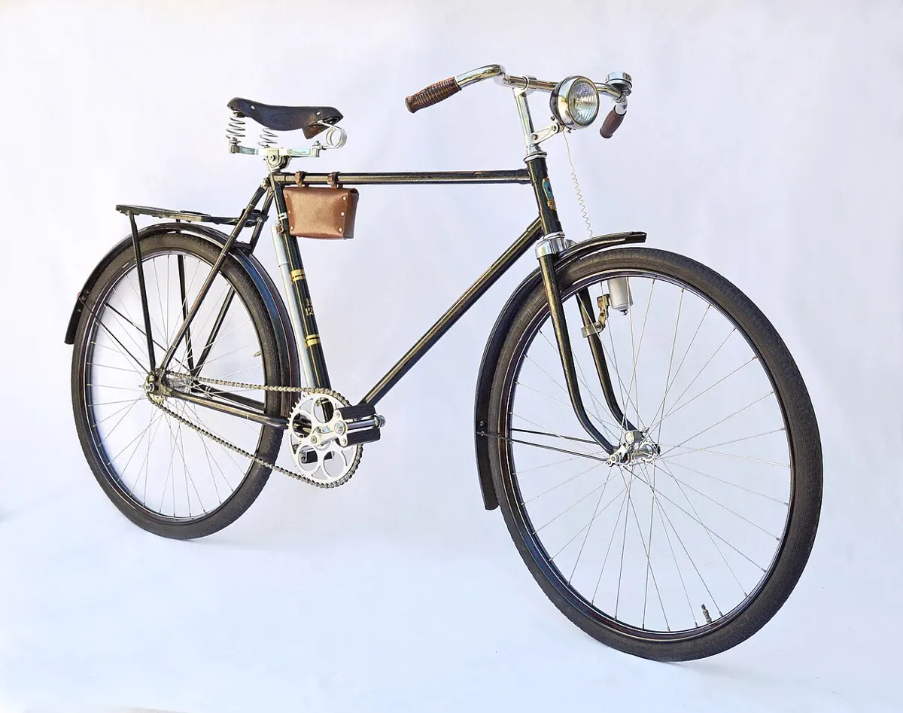
Фото: Віктор Ходєєв /Viktor Khodyeyev, Public domain · источник - 1962
Moulton — маленькие колёса и подвеска
Британский инженер Алекс Моултон представил велосипед на маленьких колёсах с подвеской на обоих колёсах. Он показал, что маленькие колёса с хорошими шинами могут ехать быстро, и повлиял на развитие складных велосипедов.
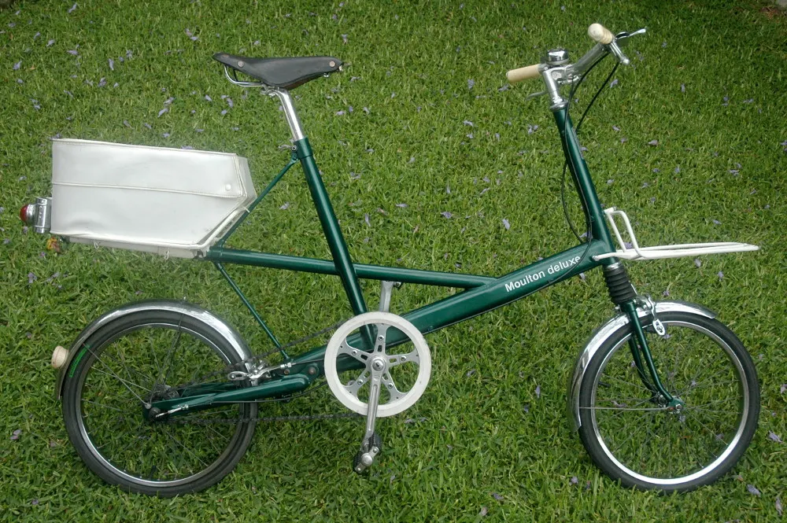
Фото: Conollyb, CC BY-SA 4.0 · источник - 1970-е
Рождение BMX и горного велосипеда
В Калифорнии подростки гоняют на велосипедах по грунтовым трассам, подражая мотокроссу, — так появляется BMX. Там же, в округе Марин, энтузиасты спускаются по горным тропам на переделанных старых «крузерах» — этот спуск (Repack) считают колыбелью маунтинбайка.

Фото: Schweiz41, Public domain · источник - 1976
Складной Brompton
Эндрю Ритчи в Лондоне конструирует складной велосипед, ставший легендой, и основывает компанию Brompton. Велосипед складывается в компактный пакет за несколько секунд.
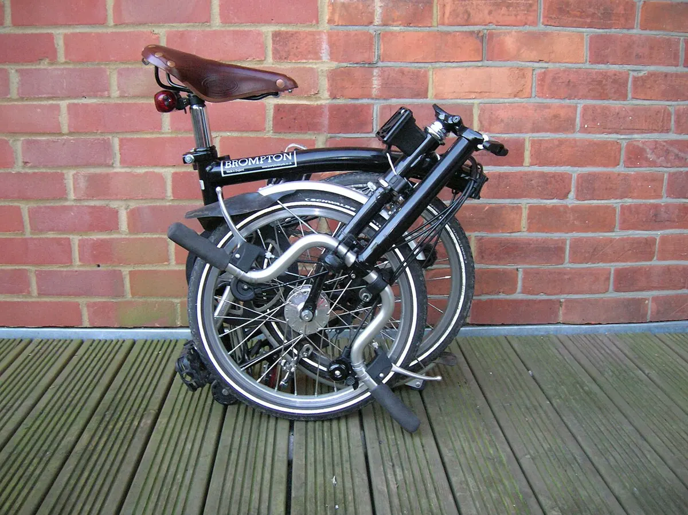
Фото: Guy Chapman, Public domain · источник - 1981
Первый серийный горный велосипед
Компания Specialized выпускает Stumpjumper — первый массовый горный велосипед. Маунтинбайк быстро становится популярным во всём мире; в 1990 году проходит первый официальный чемпионат мира UCI по маунтинбайку (Дуранго, США), а в 1996 году кросс-кантри входит в программу Олимпийских игр в Атланте.

Фото: Scu98rkr at English Wikipedia, CC BY-SA 3.0 · источник - 1984–1985
Индексное переключение Shimano SIS
Shimano выводит на рынок индексную систему SIS: шифтер переключается «щелчками» по фиксированным позициям, а не плавно. Переключение передач стало простым для всех. В 1990 году Shimano представляет STI — тормозную ручку со встроенным шифтером для шоссе.
Современность
- 1990-е — 2000-е
Дисковые тормоза, подвеска, карбон
Гидравлические дисковые тормоза и амортизационные вилки становятся нормой на горных велосипедах; углепластиковые рамы — на шоссейных. В конце 1990-х Cannondale выпускает необычную одностороннюю вилку Lefty.
- 1993
Yamaha PAS — первый массовый педелек
В Японии компания Yamaha начала продажи PAS — велосипеда с электрическим мотором, помогающим только при вращении педалей. Это начало эпохи педелеков, которые сегодня составляют огромную долю продаж в Европе и Японии.

Фото: Elmschrat, CC BY-SA 4.0 · источник - 1998
- 2008
BMX на Олимпийских играх
Гоночный BMX дебютирует на Олимпийских играх в Пекине. В 2021 году (Токио-2020) к нему добавляется BMX-фристайл.
- 2009
Электронное переключение Di2
Shimano выпускает электронную группу Dura-Ace Di2: переключатели двигают электромоторы по сигналу кнопок. Позже появляются беспроводные системы (SRAM eTap и AXS).
- 2010-е — сегодня
Гравийники, e-bike и сквозные оси
Растёт популярность гравийных велосипедов и электровелосипедов всех типов, дисковые тормоза приходят в профессиональный шоссейный спорт, сквозные оси и бескамерные шины становятся стандартом. Велосипед остаётся самым массовым транспортным средством в мире.
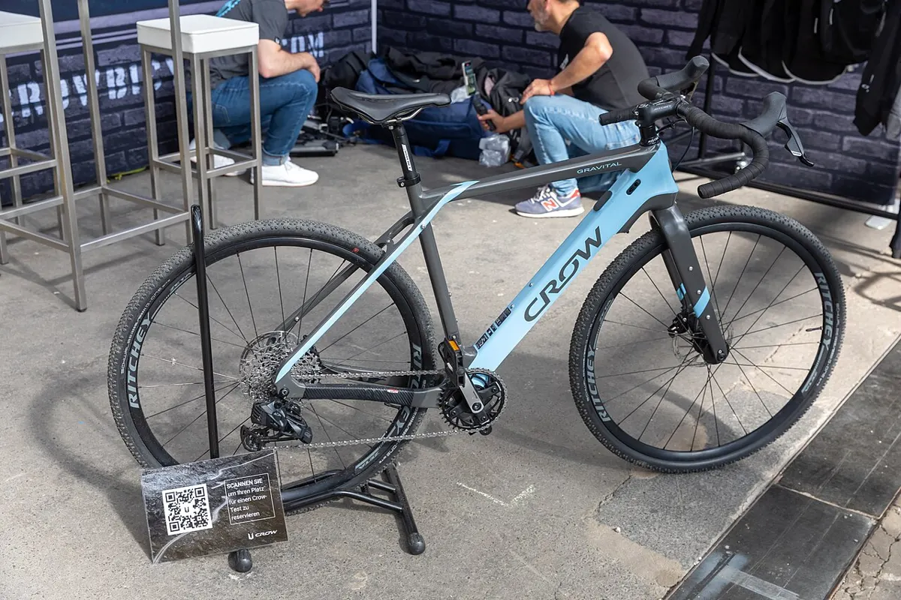
Фото: Matti Blume, CC BY-SA 4.0 · источник - 2010
Bosch выходит на рынок e-bike
Bosch представила систему для электровелосипедов и вскоре стала одним из лидеров рынка в Европе. Подробнее — Bosch eBike Systems.

Фото: Matti Blume, CC BY-SA 4.0 · источник - 2012
Одна звезда спереди: эпоха 1×
SRAM представляет горную группу XX1 с одной передней звездой и 11-скоростной кассетой широкого диапазона. Системы 1× быстро распространяются на МТБ, а затем на гравийные велосипеды.
Подробнее
Велосипеды СССР: заводы и известные модели
В СССР велосипед был массовым транспортом: на нём ездили на работу, в деревню, на дачу. Велосипеды выпускали несколько к…
Велосипеды Японии: производители и культура
Япония — одна из главных велосипедных стран мира: здесь сделаны многие стандарты компонентов, родились кэйрин и первый м…